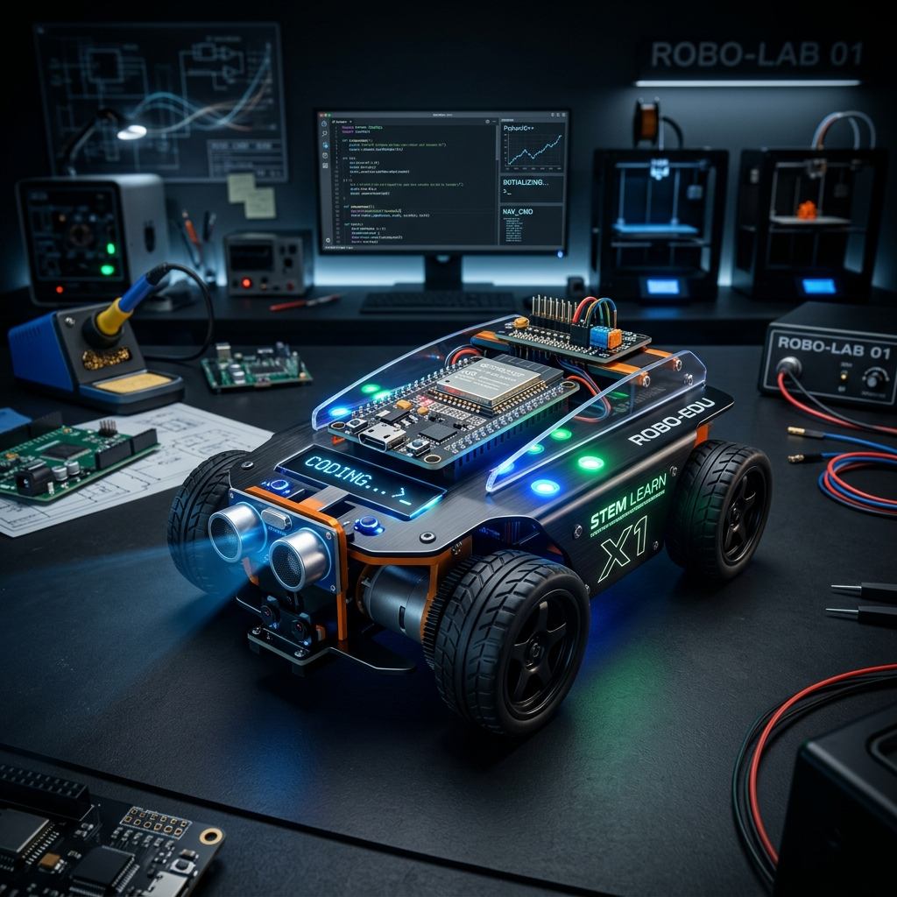

เริ่มต้นเขียนโปรแกรมควบคุมหุ่นยนต์ด้วย MicroBlocks และสร้างหน้าเว็บควบคุมผ่าน WiFi ได้ง่ายๆ ด้วยตัวคุณเอง
เริ่มเรียนรู้กันเลยเสียบสาย USB จากบอร์ด RoboESP32 เข้ากับคอมพิวเตอร์ของคุณ (หากเพิ่งเคยใช้งานครั้งแรก อย่าลืมติดตั้ง CP210x Drivers)
เปิดโปรแกรม MicroBlocks และทำการโหลดไฟล์โปรเจกต์ RoboCar.ubp ลงในบอร์ดเพื่อให้บอร์ดพร้อมรับคำสั่ง
ใช้โทรศัพท์หรือคอมพิวเตอร์เชื่อมต่อ WiFi ที่หุ่นยนต์ปล่อยออกมา จากนั้นเปิดเบราว์เซอร์เพื่อเข้าสู่หน้าจอควบคุม (Control Page)
ไลบรารี KSU_RoBoESP32.ubl ที่รวมอยู่ใน RoboCar.ubp ถูกออกแบบมาให้ใช้งานง่ายในรูปแบบบล็อก (Block-based) สำหรับโปรแกรม MicroBlocks ประกอบด้วยคำสั่งหลักๆ ดังนี้:
ใช้บล็อกเช่น KSU forward, KSU backward, KSU left, KSU right และ KSU stop เพื่อสั่งให้รถเคลื่อนที่ หรือใช้ KSU set speed เพื่อปรับความเร็วมอเตอร์
ควบคุมไฟและเสียงอย่างง่ายด้วยบล็อก KSU light, KSU rgb (ควบคุมไฟเปลี่ยนสีได้อิสระ), และใช้คำสั่ง KSU horn หรือ KSU tone สำหรับสร้างเสียงเตือนหรือดนตรี
ในลูป forever หลัก เพียงใช้ set command to (KSU web command) คู่กับ KSU do command (command) รถจะสามารถอ่านข้อมูลและทำงานตามปุ่มที่ถูกกดผ่านหน้าเว็บได้ทันที ครอบคลุมทุกคำสั่งในบล็อกเดียว!
💡 เคล็ดลับสำหรับคุณครูและนักเรียน: ไฟล์โปรเจกต์ RoboCar.ubp ได้รวมการตั้งค่าขาบอร์ด (Pin Mapping) และโค้ดหน้าเว็บควบคุม (HTML/JS) ไว้ให้เสร็จสรรพแล้ว สามารถเรียนรู้การทำงานของลูปเงื่อนไข และปรับเปลี่ยนต่อยอดโปรเจกต์ได้อย่างอิสระ!
13 บท ตั้งแต่ติดตั้งไลบรารี บล็อกทุกตัว คำสั่งทุกคำ ตารางขา GPIO ไปจนถึงใบงานสำหรับห้องเรียน